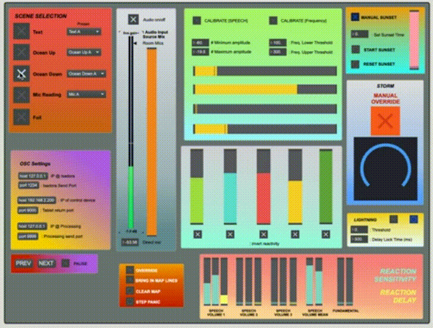
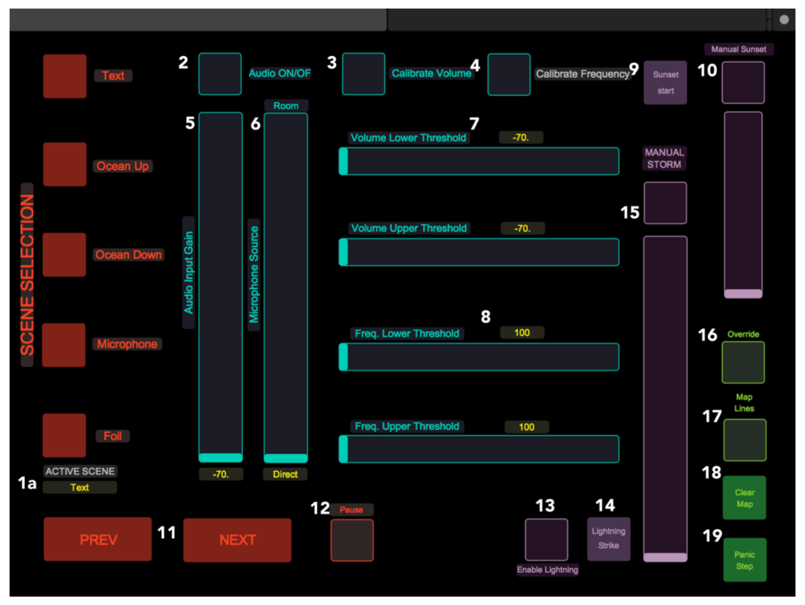
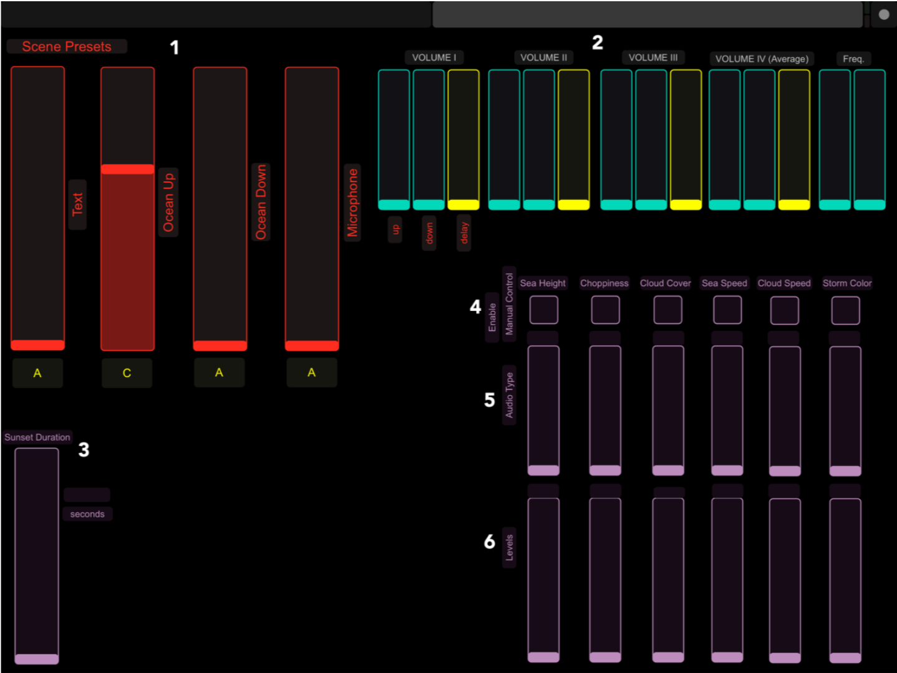

"Technology, for example, becomes not a gimmick but a way to echo elements of the refugee experience". - The National, UAE, June 2018
Cartography is a theatrical work created by Kaneza Schaal and Christopher Myers that explores themes of geography, displacement and tracing one's personal story; beginnings, ends, and the twists and turns in between.
As part of the development of the piece, the artists undertook a two weeklong creative residency at the NYU Abu Dhabi Arts Center in June 2018 to workshop creative technologies that they wanted to use in Cartography. As a recent graduate, I was selected to work as part of the creative development team under the Interactive Media Department. I focused on developing a reactive sound environment where different sonic elements of the performance (loudness, pitch, rate of speech) could be used to control, in realtime, a projection of an ocean storm.
Stills from a rehearsal showing the projection and projection surface
A work-in-progress demonstration of the tools we developed was performed at the Arts Center at the end of the residency, and the piece was debuted in a complete form at the John F. Kennedy Center for the Performing Arts in Washington D.C. in January 2019.
Below you can watch a video produced by the NYU Abu Dhabi Arts Center that chronicles the creative residency.
The audio-reactive ocean system was built in Max and Isadora, and makes heavy use of OSC communication between the two programs to co-ordinate audio processing in Max and its relation to the ocean's behavior in Isadora. Along with this, we developed an OSC user control interface for a smoother experience running the show, and making changes to the presets.
The audio sensing and processing patch in Max
 The tablet OSC control interface, showing various control pages